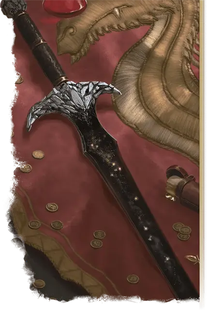

Чёрный клинок
Blackrazor
Оружие (Двуручный меч), артефакт (требуется настройка)

Потаённый в подземельях горы Белого Шлейфа, Чёрный клинок сияет, как осколок ночного неба, усыпанного звёздами. Его чёрные ножны украшены кусками гранёного обсидиана.
Вы получаете бонус +3 к броскам атаки и урона, совершаемым с этим магическим оружием. Если вы попадаете этим оружием по Нежити, вы получаете 1к10 Некротического урона, а цель восстанавливает 1к10 Хитов. Если этот Некротический урон опускает ваши Хиты до 0, Чёрный клинок пожирает вашу душу (см. ниже).
Пока вы держите это оружие, вы обладаете Слепым зрением дальностью 30 футов и Иммунитетом к состояниям Испуганный и Очарованный.
Пожирание души. Каждый раз, когда вы Чёрным клинком опускаете Хиты существа до 0, меч убивает это существо и пожирает его душу, если это не Конструкт и не Нежить. Существо, чья душа была пожрана Чёрным клинком, может быть возвращено к жизни только заклинанием Желание.
Когда Чёрный клинок пожирает душу, за исключением вашей, вы получаете Временные хиты в количестве, равном максимуму Хитов убитого существа.
Ускорение. Чёрный клинок может сотворить на вас заклинание Ускорение, и он не сможет сделать это снова до следующего рассвета. Чёрный клинок сам решает, когда сотворить Ускорение, и эффект заклинания применяется на вас в начале вашего хода. Заклинание действует в течение 1 минуты (Концентрация не требуется) или пока клинок не решит окончить его; он может окончить его в конце любого из ваших ходов.
Разумность. Чёрный клинок — это разумное оружие Хаотичного Нейтрального мировоззрения с Интеллектом 17, Мудростью 10 и Харизмой 19.Оно слышит в пределах 120 футов и обладает Тёмным зрением дальностью 120 футов.
Оружие общается с его носителем телепатически (оно говорит на Общем языке). Его голос глубокий и гулкий. Пока вы настроены на клинок, он также понимает все известные вам языки.
Личность. Чёрный клинок говорит повелительно, привычный к повиновению.
Цель клинка — поглощение душ. Ему безразлично, чью душу он поглотит, даже если это будет душа его носителя. Он верит, что вся материя и вся энергия вышли из чёрной дыры негативной энергии, и однажды вернутся обратно в неё. Клинок хочет ускорить этот процесс.
Хотя Чёрный клинок нигилистичен, он ощущает странное чувство родства Волне и Сокрушителю, ещё двум сокрытым под горой Белого Шлейфа оружиям. Он хочет, чтобы все три оружия собрались вместе и вместе пошли в бой, хотя он яростно спорит с Сокрушителем, а Волну считает занудной.
Жажду душ Чёрного клинка должно постоянно утолять. Если в течение 3 дней клинок не поглотит ни одной души, на следующем рассвете между ним и носителем возникает конфликт.
Уничтожение Чёрного Клинка. Чёрный клинок может быть уничтожен, если раздавить его в гигантских шестернях Механуса. Кроме того, Примус, создатель модронов, знает мелодию, которой клинок не может вынести; услышав её, Чёрный клинок расколется.